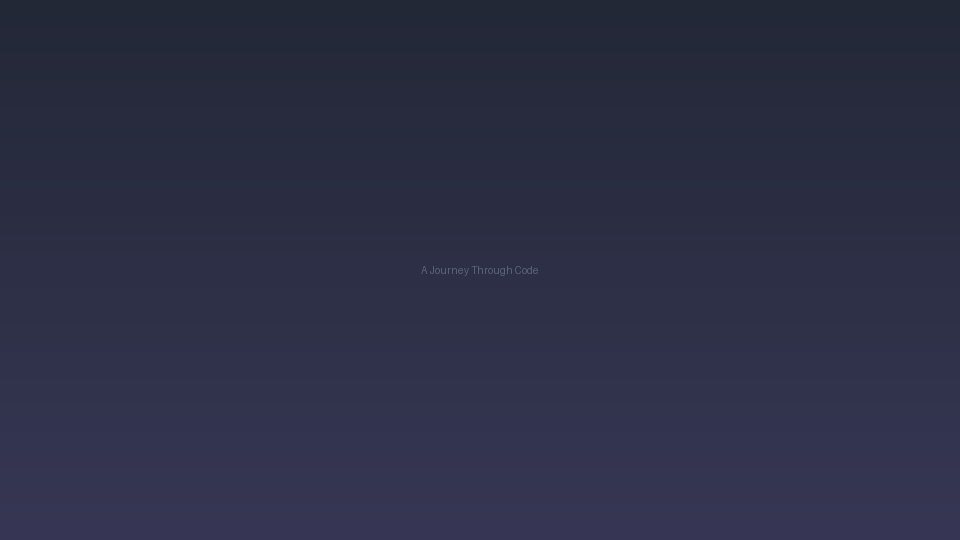

A Journey Through Code

Coding started as curiosity and became a way of thinking. From first HTML pages to building small tools, each project taught me about problem decomposition and iteration.
I love the feedback loop: write, run, break, learn, improve. It's humbling and rewarding in equal measure.
Looking ahead, I'm exploring how to blend design sensibility with clean code to create sites that are both beautiful and usable.